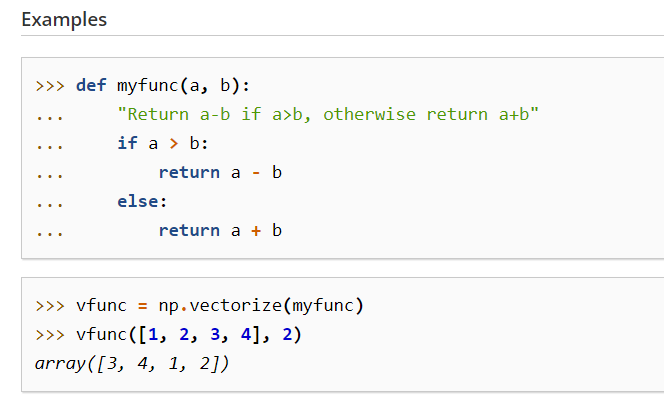
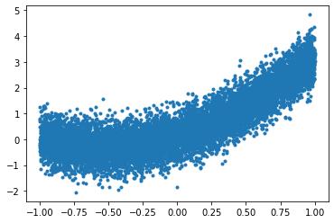
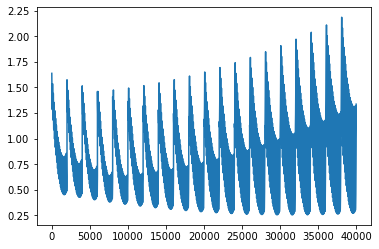
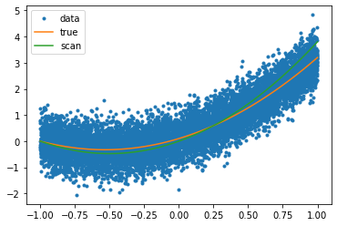
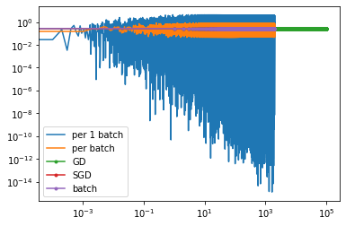
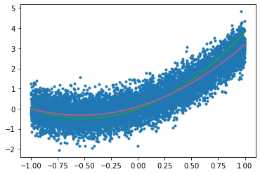

머신러닝 프로그래밍 11주차 - GD SGD batch
GD SGD batch
비용 함수(Cost function) : 평균 제곱 오차(MSE)
앞서 주어진 데이터에서 와 의 관계를 와 를 이용하여 식을 세우는 일을 가설이라고 언급했습니다. 그리고 이제 해야할 일은 문제에 대한 규칙을 가장 잘 표현하는 와 를 찾는 일입니다. 머신 러닝은 와 를 찾기 위해서 실제값과 가설로부터 얻은 예측값의 오차를 계산하는 식을 세우고, 이 식의 값을 최소화하는 최적의 와 를 찾아냅니다.
이 때 실제값과 예측값에 대한 오차에 대한 식을 목적 함수(Objective function) 또는 비용 함수(Cost function) 또는 손실 함수(Loss function)라고 합니다. 함수의 값을 최소화하거나, 최대화하거나 하는 목적을 가진 함수를 목적 함수(Objective function)라고 합니다. 그리고 값을 최소화하려고 하면 이를 비용 함수(Cost function) 또는 손실 함수(Loss function)라고 합니다. 이 책에서는 목적 함수, 비용 함수, 손실 함수란 용어를 같은 의미로 혼용해서 사용합니다.
비용 함수는 단순히 실제값과 예측값에 대한 오차를 표현하면 되는 것이 아니라, 예측값의 오차를 줄이는 일에 최적화 된 식이어야 합니다. 앞으로 배울 러닝, 딥 러닝에는 다양한 문제들이 있고, 각 문제들에는 적합한 비용 함수들이 있습니다. 회귀 문제의 경우에는 주로 평균 제곱 오차(Mean Squared Error, MSE)가 사용됩니다.
import numpy as np
import random
import matplotlib.pyplot as plt
import math
import time
a = 1.5
b = 1.6
c = 0.1
n = 10000 #데이터 갯수
xmin, xmax = -1, 1
numpy.vectorize이란?
참고사이트 - https://numpy.org/doc/stable/reference/generated/numpy.vectorize.html
from IPython.display import Image # 주피터 노트북에 이미지 삽입
Image("C://Users/MyCom/jupyter-tutorial/수업자료/data/20211117_003551_1.png")

def f(x,a,b,c):
return a*x*x + b*x + c #2차함수 형태
# def f(x, a, b): #1차함수형태
# return a*x + b
#return math.sin(a*x+b)
vf = np.vectorize(f)
-uniform() 함수
2개의 숫자 사이의 랜덤 실수를 리턴합니다.
random.uniform(1, 10) # Random float x, 1.0 <= x < 10.0
결과 값 : 1.1800146073117523
xs = np.random.uniform(xmin,xmax,n) #randint는 정수를 uniform은 소수를 반환한다
# ys = f(xs,a,b,c) + np.random.normal(0,10,n) # 1차함수
ys = f(xs,a,b,c) + np.random.normal(0,0.5,n) #noise 추가 / normal (평균, 표준편차,만들어질 갯수) # 참고사이트 - https://lngnat.tistory.com/entry/%EB%A8%B8%EC%8B%A0%EB%9F%AC%EB%8B%9D-%EC%A0%95%EA%B7%9C%EB%B6%84%ED%8F%AC-Normal-Distribution-NumPyrandomnormal%ED%8F%89%EA%B7%A0%ED%91%9C%EC%A4%80%ED%8E%B8%EC%B0%A8%EA%B0%AF%EC%88%98
#2차함수
xs
array([ 0.3914742 , 0.55647045, -0.17380592, ..., -0.22120491,
-0.42314823, 0.39046599])
ys
array([ 1.11550609, 1.13018798, -0.67826572, ..., 0.47815574,
0.28219466, 1.50678987])
# # 2번째 방법
# def f(x,a,b):
# return np.sin(a*x+b)
# xs = np.random.uniform(xmin,xmax,n)
# ys = f(xs,a,b) + np.random.normal(0,1) #노이즈 추가
# ys
plt.plot(xs,ys,'.')
[<matplotlib.lines.Line2D at 0x2688be3fd68>]

# 1차함수
# bestA, bestB = None, None
# bestLoss = 1e9 # 10의 9승
# t0 = time.time()
# lossesBySearch = []
# #numpy 모듈의 arange 함수는 반열린구간 [start, stop) 에서 step 의 크기만큼 일정하게 떨어져 있는 숫자들을 array 형태로 반환해 주는 함수다.
# for aa in np.arange(-10,10,0.1):
# for bb in np.arange(-10,10,0.1):
# yys = f(xs, aa, bb)
# loss = ((yys - ys) ** 2).mean() #sum() 대신에 mean()으로 대체
# lossesBySearch.append(loss)
# if loss < bestLoss:
# bestA, bestB = aa, bb
# bestLoss = loss
# tf = time.time()
# print("Truth:",a,b)
# print("Fit results:", bestA,bestB)
# print("Elapsed time:", (tf-t0))
# 2차함수
bestA, bestB, bestC = None, None, None
bestLoss = 1e9 # 10의 9승
t0 = time.time()
lossesBySearch = []
#numpy 모듈의 arange 함수는 반열린구간 [start, stop) 에서 step 의 크기만큼 일정하게 떨어져 있는 숫자들을 array 형태로 반환해 주는 함수다.
for aa in np.arange(0,2,0.1):
for bb in np.arange(0,2,0.1):
for cc in np.arange(0,1,0.01):
yys = f(xs, aa, bb, cc)
loss = ((yys - ys) ** 2).mean() #sum() 대신에 mean()으로 대체
lossesBySearch.append(loss)
if loss < bestLoss:
bestA, bestB, bestC = aa, bb, cc
bestLoss = loss
tf = time.time()
print("Truth:",a,b,c)
print("Fit results:", bestA,bestB,bestC)
print("Elapsed time:", (tf-t0))
Truth: 1.5 1.6 0.1
Fit results: 1.9000000000000001 1.9000000000000001 0.0
Elapsed time: 1.409447193145752
plt.plot(lossesBySearch)
[<matplotlib.lines.Line2D at 0x2688c01feb8>]

# #1방법
# plt.plot(xs,ys,'.')
# plt.plot([xmin,xmax], [f(xmin,a,b), f(xmax,a,b)])
# xxs = np.linspace(xmin,xmax,100)
# yys = f(xxs,bestA,bestB)
#2방법
plt.plot(xs,ys,'.',label="data")
xxs = np.linspace(xmin,xmax,100)
yBest = f(xxs, bestA, bestB,bestC)
yTrue = f(xxs,a,b,c)
plt.plot(xxs, yTrue,label="true")
plt.plot(xxs, yBest,label="scan")
plt.legend()
<matplotlib.legend.Legend at 0x2688c0b19e8>

# 1차함수
# def gradF(x,a,b): #gradient 계산
# return (x,1)
# 2차함수
def gradF(x,a,b,c): #gradient 계산
## y = a*x*x + b*x +c
return (x*x,x,1)
# #1차함수
# t0 = time.time()
# fitA, fitB = -10,-10
# eta = 1e-4 #parameter 파라미터
# lossesByGrad = []
# for i in range(100000):
# yys = f(xs,fitA,fitB)
# gradA , gradB = gradF(xs, fitA, fitB)
# fitA = fitA - eta*((yys-ys)*gradA).mean() # sum()대신에 mean()으로 대체
# fitB = fitB - eta*((yys-ys)*gradB).mean()
# loss = ((yys-ys)**2).sum()
# lossesByGrad.append(loss)
# tf = time.time()
# print("Truth:",a,b)
# print("Fit results:",fitA,fitB)
# print("Elapsed time:",(tf-t0))
#2차함수
t0 = time.time()
fitA, fitB, fitC = 1.5,1.5, 0
eta = 1e-4 #parameter 파라미터
lossesByGrad = []
#while true:
for i in range(100000):
yys = f(xs,fitA,fitB,fitC)
gradA , gradB, gradC = gradF(xs, fitA, fitB, fitC)
fitA = fitA - eta*((yys-ys)*gradA).mean() # sum()대신에 mean()으로 대체
fitB = fitB - eta*((yys-ys)*gradB).mean()
fitC = fitC - eta*((yys-ys)*gradC).mean()
loss = ((yys-ys)**2).mean()
lossesByGrad.append(loss)
#if loss < le4: break #while true일 경우 사용함
tf = time.time()
print("Truth:",a,b,c)
print("Fit results:",fitA,fitB,fitC)
print("Elapsed time:",(tf-t0))
Truth: 1.5 1.6 0.1
Fit results: 1.5080399692979298 1.5915231895193742 0.09990456173590412
Elapsed time: 8.478917360305786
t0 = time.time()
sgdA, sgdB, sgdC = 1.5,1.5, 0
eta = 1e-6 #parameter 파라미터
lossesBySGD = []
#while true:
for i in range(2000):
for x, y in zip(xs,ys):
yys = f(x,sgdA,sgdB,sgdC)
gradA , gradB, gradC = gradF(x, sgdA, sgdB, sgdC)
sgdA = sgdA - eta*((yys-y)*gradA)
sgdB = sgdB - eta*((yys-y)*gradB)
sgdC = sgdC - eta*((yys-y)*gradC)
yys = f(xs,sgdA,sgdB,sgdC)
loss = ((yys-ys)**2).sum() # or mean()
lossesBySGD.append(loss)
#if loss < le4: break #while true일 경우 사용함
tf = time.time()
print("Truth:",a,b,c)
print("Fit results:",sgdA,sgdB,sgdC)
print("Elapsed time:",(tf-t0))
Truth: 1.5 1.6 0.1
Fit results: 1.4972699085985817 1.5946286079489527 0.10385797093740516
Elapsed time: 58.051812410354614
import numpy as np
t0 = time.time()
batchA, batchB, batchC = 1.5,1.5, 0
eta = 1e-6 #parameter 파라미터
lossesByBatch = []
losses1ByBatch = []
batchSize = 10
#while true:
for i in range(2000):
#for j in np.random.shuffle(np.arange(batchSize,len(xs),batchSize)):
for j in range(batchSize,len(xs),batchSize):
yys = f(xs[j-batchSize:j],batchA,batchB,batchC)
df = yys-ys[j-batchSize:j]
gradA , gradB, gradC = gradF(xs[j-batchSize:j], batchA, batchB, batchC)
batchA = batchA - eta*(df*gradA).mean()
batchB = batchB - eta*(df*gradB).mean()
batchC = batchC - eta*(df*gradC).mean()
loss = (df**2).mean()
losses1ByBatch.append(loss)
yys = f(xs,batchA,batchB,batchC)
loss = ((yys-ys)**2).mean() # or sum()
lossesByBatch.append(loss)
#if loss < le4: break #while true일 경우 사용함
tf = time.time()
print("Truth:",a,b,c)
print("Fit results:",batchA,batchB,batchC)
print("Elapsed time:",(tf-t0))
Truth: 1.5 1.6 0.1
Fit results: 1.5225644591342433 1.5460096195114272 0.08316846899365685
Elapsed time: 56.38375401496887
t0 = time.time()
sgdA, sgdB, sgdC = 1.5,1.5, 0
eta = 1e-6 #parameter 파라미터
lossesBySGD = []
losses1BySGD = []
#while true:
for i in range(2000):
for x, y in zip(xs,ys):
yy = f(x,sgdA,sgdB,sgdC)
gradA , gradB, gradC = gradF(x, sgdA, sgdB, sgdC)
sgdA = sgdA - eta*((yy-y)*gradA)
sgdB = sgdB - eta*((yy-y)*gradB)
sgdC = sgdC - eta*((yy-y)*gradC)
loss = ((yy-y)**2)
losses1BySGD.append(loss)
yys = f(xs,sgdA,sgdB,sgdC)
loss = ((yys-ys)**2).mean()
lossesBySGD.append(loss)
#if loss < le4: break #while true일 경우 사용함
tf = time.time()
print("Truth:",a,b,c)
print("Fit results:",sgdA,sgdB,sgdC)
print("Elapsed time:",(tf-t0))
Truth: 1.5 1.6 0.1
Fit results: 1.4972699085985817 1.5946286079489527 0.10385797093740516
Elapsed time: 68.72492408752441
lossesByGrad[:100]
[0.26631722803522667,
0.2663147113966318,
0.2663121952894603,
0.266309679713595,
0.266307164668919,
0.2663046501553153,
0.2663021361726667,
0.2662996227208566,
0.2662971097997679,
0.26629459740928374,
0.2662920855492873,
0.26628957421966176,
0.2662870634202902,
0.26628455315105604,
0.2662820434118423,
0.26627953420253236,
0.2662770255230096,
0.2662745173731572,
0.2662720097528586,
0.26626950266199717,
0.26626699610045623,
0.2662644900681193,
0.2662619845648697,
0.26625947959059115,
0.266256975145167,
0.26625447122848084,
0.2662519678404161,
0.2662494649808565,
0.2662469626496856,
0.26624446084678705,
0.2662419595720445,
0.2662394588253416,
0.2662369586065621,
0.26623445891558983,
0.2662319597523084,
0.2662294611166018,
0.2662269630083536,
0.26622446542744777,
0.26622196837376816,
0.2662194718471987,
0.2662169758476233,
0.2662144803749259,
0.26621198542899055,
0.26620949100970104,
0.2662069971169416,
0.2662045037505962,
0.26620201091054896,
0.2661995185966839,
0.26619702680888524,
0.266194535547037,
0.2661920448110235,
0.26618955460072885,
0.2661870649160374,
0.26618457575683335,
0.26618208712300084,
0.2661795990144244,
0.2661771114309883,
0.26617462437257683,
0.26617213783907445,
0.26616965183036545,
0.2661671663463344,
0.26616468138686583,
0.26616219695184407,
0.2661597130411537,
0.2661572296546792,
0.2661547467923052,
0.2661522644539163,
0.2661497826393971,
0.2661473013486322,
0.2661448205815064,
0.26614234033790424,
0.26613986061771056,
0.2661373814208101,
0.26613490274708757,
0.2661324245964277,
0.2661299469687155,
0.26612746986383573,
0.2661249932816732,
0.26612251722211294,
0.26612004168503983,
0.26611756667033876,
0.2661150921778947,
0.2661126182075928,
0.26611014475931793,
0.26610767183295525,
0.26610519942838984,
0.26610272754550673,
0.26610025618419114,
0.2660977853443281,
0.2660953150258029,
0.26609284522850074,
0.26609037595230683,
0.26608790719710645,
0.26608543896278486,
0.2660829712492275,
0.26608050405631944,
0.2660780373839463,
0.2660755712319933,
0.26607310560034597,
0.2660706404888897]
# plt.yscale('log')
# plt.xscale('log')
# x1BySGD = np.linspace(1,len(lossesBySGD),len(losses1BySGD))-1
# plt.plot(x1BySGD,losses1BySGD, '-')
# plt.plot(lossesByGrad, '-')
# plt.plot(lossesBySGD, '-')
plt.yscale('log')
plt.xscale('log')
x1BySGD = np.linspace(1,len(lossesBySGD),len(losses1BySGD))-1
plt.plot(x1BySGD,losses1BySGD, '-', label="per 1 batch")
x1ByBatch = np.linspace(1,len(lossesByBatch),len(losses1ByBatch))-1
plt.plot(x1ByBatch,losses1ByBatch, '-',label="per batch")
plt.plot(lossesByGrad, '.-',label="GD")
plt.plot(lossesBySGD, '.-',label="SGD")
plt.plot(lossesByBatch, '.-',label="batch")
plt.legend()
<matplotlib.legend.Legend at 0x268ae64a6a0>

# 1차함수
# plt.plot(xs,ys,'.')
# xxs = np.linspace(xmin,xmax,100)
# yGrad = f(xxs,fitA, fitB)
# yScan = f(xxs, bestA, bestB)
# yTrue = f(xxs,a,b)
# plt.plot(xxs, yTrue)
# plt.plot(xxs, yScan)
# plt.plot(xxs, yGrad)
# 2차함수
plt.plot(xs,ys,'.')
xxs = np.linspace(xmin,xmax,100)
yGrad = f(xxs,fitA, fitB, fitC)
ySGD = f(xxs,sgdA, sgdB, sgdC)
yScan = f(xxs, bestA, bestB, bestC)
yTrue = f(xxs,a,b,c)
plt.plot(xxs, yTrue)
plt.plot(xxs, yScan)
plt.plot(xxs, yGrad)
plt.plot(xxs, ySGD)
[<matplotlib.lines.Line2D at 0x268bddcb470>]

#11주차 1시 1분부터